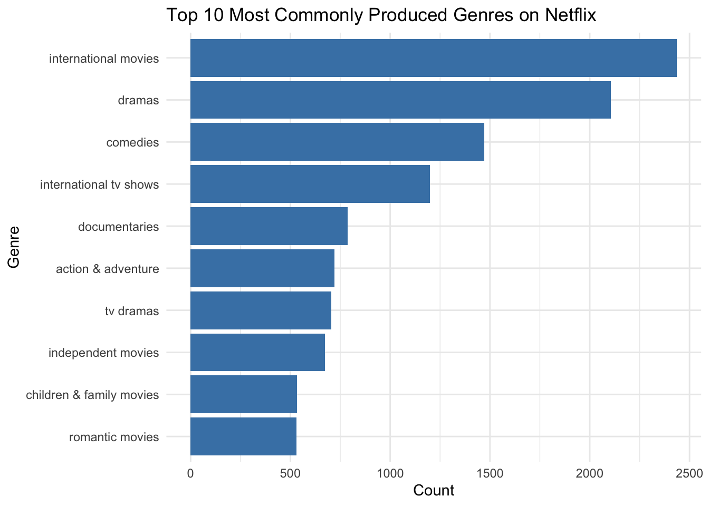
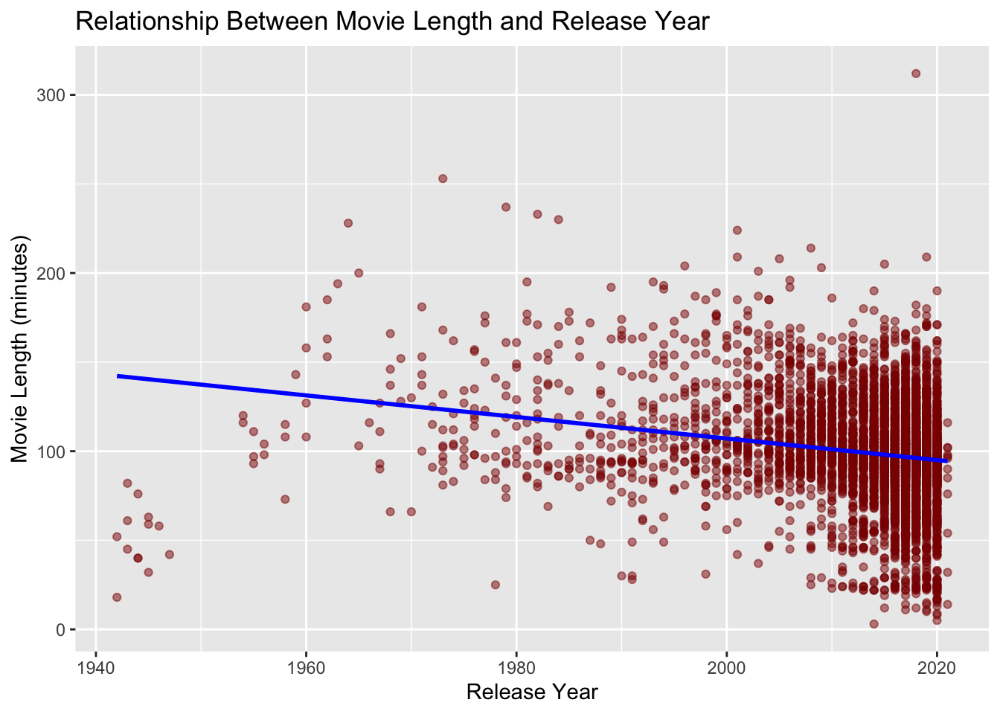

# Importing datasets I will analyze
netflix_titles <- readr::read_csv('https://raw.githubusercontent.com/rfordatascience/tidytuesday/master/data/2021/2021-04-20/netflix_titles.csv')Text Analysis
Netflix Consumer Strategy
In this project, I analyzed the Netflix Movies and TV Shows dataset to explore trends and insights into potential Netflix consumer engagement strategy. This dataset, sourced from Kaggle and made available through TidyTuesday, provides information on titles, genres, release years, duration, and descriptions.
library(tidyverse)
library(ggplot2)
library(tidytuesdayR)
library(stringr)
library(plotly)
library(dplyr)Question 1: What are the most commonly produced genres on Netflix?
# Convert listed genres to lowercase
netflix_titles <- netflix_titles |>
mutate(listed_in = str_to_lower(listed_in))# Split genres into individual rows
genre_trends <- netflix_titles |>
separate_rows(listed_in, sep = ", ") |>
count(listed_in, sort = TRUE) |>
rename(primary_genre = listed_in, total_count = n)# Keep only the top 10 genres
top_10_genres <- genre_trends |>
slice_max(total_count, n = 10)# Bar plot with genre names on x-axis
genre_plot <- ggplot(top_10_genres, aes(x = reorder(primary_genre, total_count), y = total_count)) +
geom_bar(stat = "identity", fill = "steelblue") +
coord_flip() +
labs(
title = "Top 10 Most Commonly Produced Genres on Netflix",
x = "Genre",
y = "Count"
) +
theme_minimal()
print(genre_plot)
This first bar chart displays the top 10 most frequently produced genres in the Netflix dataset, with Drama, Comedy, and International Movies and TV Shows appearing most often. These counts highlight which genres are most commonly represented in the catalog. While Drama and Comedy have a strong presence—potentially reflecting a general demand for emotionally engaging or lighthearted content—it’s important to note that these patterns don’t necessarily reflect Netflix’s production priorities or viewer preferences. They may instead reflect what content happened to be available or licensed during specific periods. The chart simply shows which genres appear most frequently, offering a snapshot of how the catalog is distributed across different types of content. Providing this visual overview helps contextualize genre diversity without assuming intent behind the distribution.
Question 2: Is there a relationship between movie length and release year?
# # Filter to include only movies by removing rows where the duration field contains "season" (TV shows)
netflix_titles <- netflix_titles |>
mutate(
# Extract duration for movies by using a regular expression to exclude TV shows.The pattern uses a negative lookahead to ignore any "duration" values containing "season"
movie_length = as.numeric(str_extract(duration, "^(?!.*seasons).*\\d+"))
)
# Filter to only movies and ensure there are valid movie lengths and release years
movie_data <- netflix_titles |>
filter(
type == "Movie" &
!is.na(movie_length) &
!is.na(release_year) &
movie_length > 0
)
# Check the first few rows of filtered movie data
head(movie_data)# A tibble: 6 × 13
show_id type title director cast country date_added release_year rating
<chr> <chr> <chr> <chr> <chr> <chr> <chr> <dbl> <chr>
1 s2 Movie 7:19 Jorge Michel… Demi… Mexico December … 2016 TV-MA
2 s3 Movie 23:59 Gilbert Chan Tedd… Singap… December … 2011 R
3 s4 Movie 9 Shane Acker Elij… United… November … 2009 PG-13
4 s5 Movie 21 Robert Luket… Jim … United… January 1… 2008 PG-13
5 s7 Movie 122 Yasir Al Yas… Amin… Egypt June 1, 2… 2019 TV-MA
6 s8 Movie 187 Kevin Reynol… Samu… United… November … 1997 R
# ℹ 4 more variables: duration <chr>, listed_in <chr>, description <chr>,
# movie_length <dbl># Scatter plot of movie length vs. release year with trend line
length_vs_year_plot <- ggplot(movie_data, aes(x = release_year, y = movie_length)) +
geom_point(alpha = 0.5, color = "darkred") +
geom_smooth(method = "lm", se = FALSE, color = "blue") +
labs(
title = "Relationship Between Movie Length and Release Year",
x = "Release Year",
y = "Movie Length (minutes)"
)
print(length_vs_year_plot)
In this second plot, to ensure accurate analysis of movie length, I filtered out entries where the duration field included the word “season,” which typically indicates a TV series rather than a standalone film. This step, implemented using a negative lookahead (^(?!.seasons).\d+), allowed me to isolate only actual movie runtimes (e.g., “90 minutes”) for a more reliable analysis. The scatter plot reveals a slight decreasing trend in movie lengths from 1940 to 2020. While we can’t infer Netflix’s intentions or content strategy from this pattern alone—since changes could reflect shifts in genre popularity or catalog composition—it does suggest a general trend toward shorter films in the dataset. To reduce the noise from individual data points, the second plot groups movie lengths by decade. This broader view helps make changes in average run times more visible and illustrates how the types of movies available have varied over time. Including this narrative perspective helps contextualize the observed patterns without assuming intent behind them.
How many titles on Netflix use “The” in it?
the_count <- sum(str_detect(netflix_titles[["title"]], "\\bthe\\b"))
the_count[1] 558I used a regular expression to count how many titles on Netflix contain the word “the,” using the pattern \bthe\b. This method identified 558 titles with the word “the” in their title. This count reflects the prevalence of titles that include this common article, but it does not suggest any intentional pattern or strategy behind Netflix’s content naming choices.
Count how many titles contain a four-digit year
year_count <- sum(str_detect(netflix_titles$title, "\\b\\d{4}\\b"))
year_count[1] 42I used an additional regular expression to count how many titles contain a four-digit year (e.g., “1994” or “2020”), using the pattern \b\d{4}\b. This helps identify how often titles reference specific years, which could suggest biographical, historical, or period-themed content. The output was 42 titles, indicating that such date references are relatively uncommon in the dataset.
Analysis on Tables/Plots:
This dataset offers valuable insights into trends within Netflix’s catalog, highlighting patterns in genre frequency and movie lengths over time. While these findings do not reveal Netflix’s internal strategy or intent, they do show which genres appear most often and how movie runtimes have varied across different decades. The analysis focuses on the most commonly produced genres and the relationship between movie lengths and release years, offering a clearer picture of how the content in this dataset is distributed and how it has changed over time.
Data Source: Netflix Movies and TV Shows Dataset https://www.kaggle.com/shivamb/netflix-shows?select=netflix_titles.csv
Author: Shivam Bansal
This dataset, sourced from Kaggle, originates from Flixable, a third-party Netflix search engine. It contains information about movies and TV shows available on Netflix since 2019, including:
Attributes such as title, genre, language, release year, and rating.
Insights into patterns related to content production, genre trends, and the evolution of media consumption.
Integration with external data sets like IMDB and Rotten Tomatoes for deeper analysis.
The data was last updated on Kaggle by Shivam Bansal.